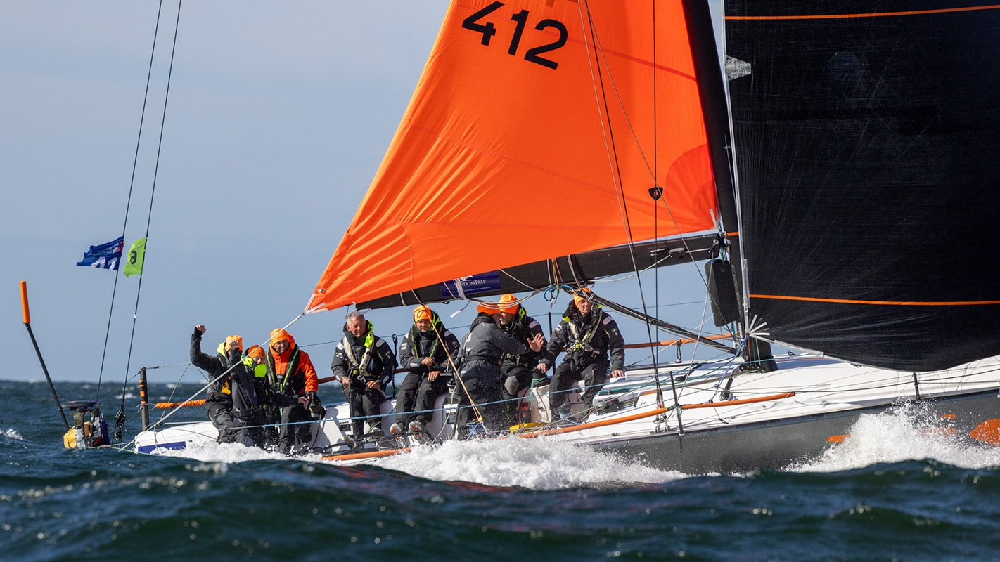
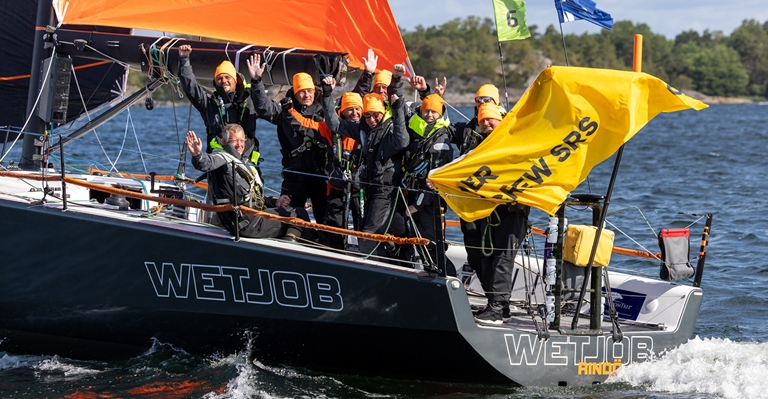
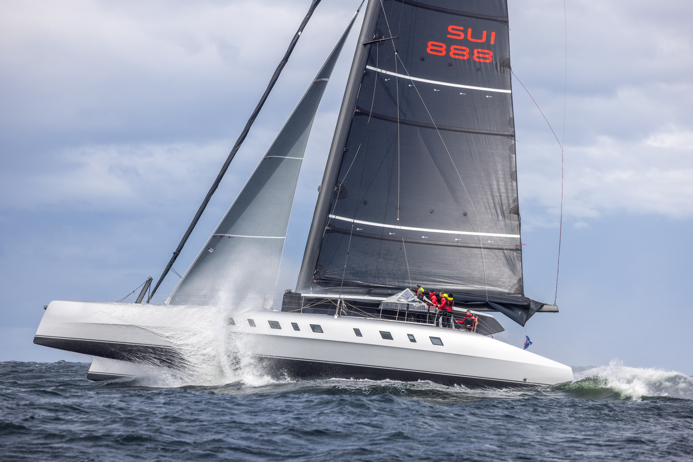
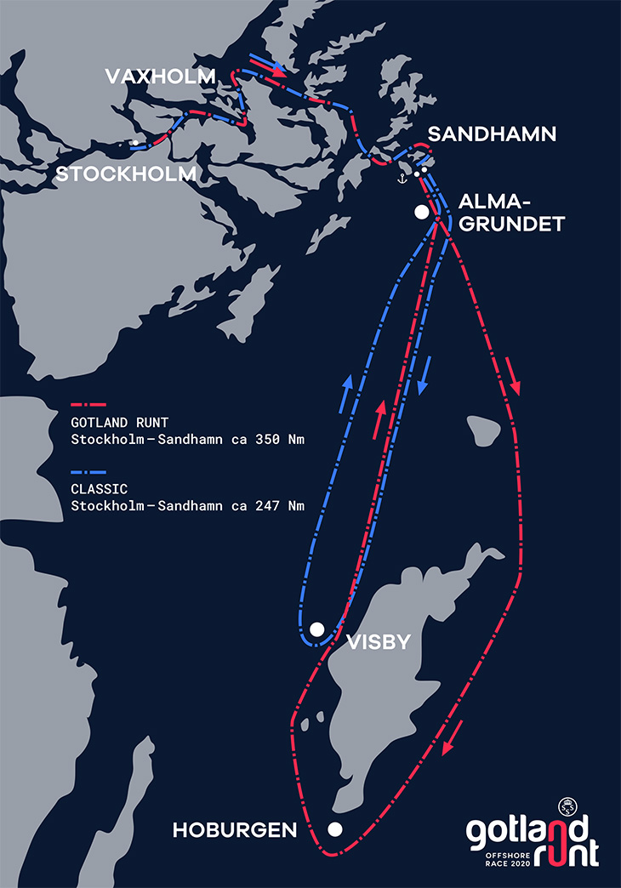
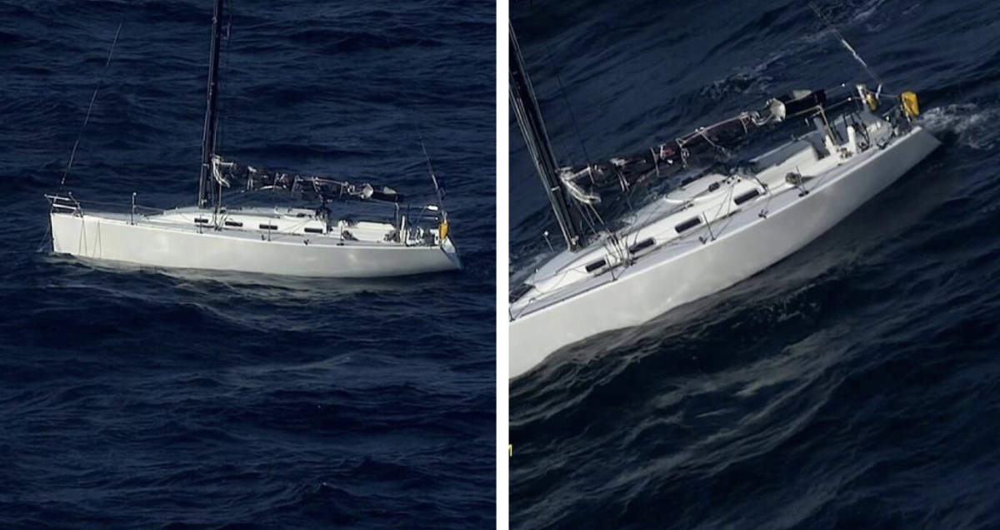

Gotland offshore race 2023
This years gotland runt offshore race was tough, It was steady winds att gale force all thru the race. 150
boats quit the race before crossing the baltic sea

Several boats got damaged
2 boats broke their masts, one boat lost their rudder and had to be abandoned at sea. One of the boats ho
broke their mast was Boj boj ho were in the lead of their class but unfortiently had to quit and get back in
to a harbour.

The winner of this years gotland runt
The total winner of the race was team wetjob who even thou they had a unfortiently jibe at the sprint, they
managed to keep their leeding posistion all the way in to the finnish line.

Allegra wins her class
The katamaran Allegra was the fastest boat arond the race track and crossed the finnish line almost 12 hours
before the rest of the fleet. She was really flying in these strong winds says her captain.

A new track for classic sailboats
This year we have a new track that is a bit shorter and a new class for older boats. To enter this class the
boats needs to be older than 30 years.

Boat abandoned at sea
Sy Pandion unfortiently lost her rudder just outside fårö and wasnt able to steer. The coastguard saved the
crew from the drifting ship. After the race the boat was found and towed back to a harbour were her crew was
waiting./p>

Popular race
This year whe had 300 participants, it is almost 100 more than last year. The race had som really nice wind
up to alma grundet then it increased up to gale force winds and about half of all the participants decided
to turn back int o the archipelago again.